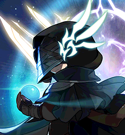

Checked-in boss knowledge
The First AdversaryNORMAL
Parry the right attacks to keep the shared Power of Order high; it sets the party's damage and protects your Will.
- Boss level
- 280
- entry 270
- Defence (PDR)
- 380%
- Authentic Force
- 320
- Party
- Up to 3
- Recommended · Trio
- 40k
- HEXA-converted stat
- Recommended · Duo
- 45k
- HEXA-converted stat
- Recommended · Solo
- 60k
- HEXA-converted stat
HP
Phase 1
Phase 2
Phase 3
Overview
Power of Order stages
- 0-199 · -40% FD
- 200-399 · -20% FD
- 400-599 · no change
- 600-799 · +10% FD
- 800+ · +20% FD
Starts each phase at 500 and decays 5/s, never below the current stage.
Will of the Adversary
- Start1000
- Death-200, against you
- Cycle at 200-399-100, against you
- Cycle under 200-200, against you
Reaching 0 removes you.
Core
- Will of the AdversaryYour personal life pool; at 0 you are out.
- Power of OrderShared gauge that sets the party's final damage by stage.
- Cycle of PowerEvery 2:18. 600+ is kept; anything lower resets to 500, and under 400 also costs Will.
- Immortal Will0.5s parry on NPC/Gather. 6s cooldown, 4.5s back on a rewarded parry.
- Party scalingDuo/trio gain 50%/34%. Hit loss is 75%/50% on Easy to Hard, 100% on Extreme.
- BindCancels his pattern; no critical bind. HP splits 30/30/40.
Danger
- Every hit drains on Hard+On Hard/Extreme all hits, map patterns too, drain Power of Order.
- Intense Strike (Phase 1)The real body (red daggers) deals 999%. Parry, i-frame, or crouch far.
- Sword Shower slam1000% unless parried or jumped; his opener if unbound.
- Altar (Phase 2)Drains fast on Hard+. The marked player takes it to a corner early.
- Flow and Arrow Rain (Phase 3)Spend Genesis, i-frames or Ascent here. A bind cancels Flow.
- Stage 5 tornadoes (Phase 1)At 800+ on both edges. 25% HP/s and Slow; gone if the stage drops.
- ExtremeMuch heavier hits, and party gauge losses are no longer reduced.
Tips
- Parry reliablyEnter every Cycle at 600+; once high, dodge instead of forcing parries.
- Own colour onlyIn Phases 2-3, call attributes and parry only yours.
- Stay with aggroHe can turn around just before strengthened swings.
- Burst on cooldownDon't hold for the Cycle. Ideal is 16 bursts (5 / 4 / 7 by phase).
- Summon Evolve tellBoth wings folded: centre. Both spread: sides. One folded: that side.
- Skip Sniping safelyOn lock-on, stand on his centre and i-frame the final arrow.
- Pre-Cycle windowNo casts ~5s before a Cycle, no big patterns 10-15s before.
Phases
Phase 1 · Warrior and thief
parry red hits
- Red hits Parry the red strengthened hits.
- Shadow Partner Shadow Partner copies swing just before him.
- Opener Unbound on entry he opens with Sword Shower; its slam deals 1000% unless parried or jumped.
- Intense Strike He hides between two clones; the real body's daggers glow red and deal 999%. Parry, i-frame, or crouch far.
- Stage 5 tornadoes At 800+ they stand at both edges: 25% HP/s, Slow and gauge drain. They vanish if the stage drops.
Phase 2 · Mage and archer
parry your element
- Elements Each player gets Fire, Ice or Holy, re-rolled every Cycle.
- Own element Parry only attacks of your own element.
- Altar Drains the gauge fast on Hard+; the marked player takes it to a corner early.
Phase 3 · Both
both rule sets
- Both rule sets Both rule sets; strengthened hits glow rainbow.
- Flow and Arrow Rain They overlap his other attacks; spend Genesis, i-frames or Ascent here. A bind cancels Elemental Flow.
- Extreme His last swings here deal 200%.
Strategies
Options, not orders: each trades risk against the damage it needs.
Parry to Stage 4
- Risk
- Medium
- Damage need
- Low
- When
- Parties that parry reliably; most useful at minimum spec on Hard/Extreme
- Payoff
- The first burst lands at stage 4 or higher, and that stage now survives the Cycle
- Do not bind on entry, so his first cast is Sword Shower.
- Up-jump or i-frame the first slam, then everyone parries the second slam. In a trio one parry alone will not reach stage 4.
- Burst as soon as the gauge reaches Stage 4 (600+, +10% final damage); do not hold the burst to chase Stage 5.
Bind on entry
- Risk
- Low
- Damage need
- High
- When
- Damage is comfortable, or someone cannot yet parry the opener reliably (inferred from the guide's wording, not stated as a recommendation)
- Payoff
- Immediate damage with no opener risk, but the first burst runs at stage 3 with no bonus
- Bind as you enter; the bind cancels his current pattern.
- Burst during the bind and build the gauge with later red parries.
Parry the last Sniping arrow
- Risk
- High
- Damage need
- Low
- When
- Players confident in the timing; skip on Extreme unless practised, since the final arrow deals 999%
- Payoff
- Large gauge gain (solo +250 on Easy, +200 otherwise; duos and trios get the party share)
- During the six regular shots, steer the crossbow so it fires away from you.
- Parry the final arrow of your own attribute; practise the timing before relying on it.
Start at Stage 5
- Risk
- High
- Damage need
- Low
- When
- Parties where everyone parries reliably. Described for Easy (about 3 parries) and Normal (about 4); untested on Hard/Extreme, where other guides burst right after the opener parry
- Payoff
- The first burst runs at +20% final damage instead of +10%, but a missed parry or a death delays it long enough to lose more than the bonus
- Do not bind or burst on entry; deal sustained damage and have everyone parry the opening strengthened attacks.
- Burst the moment the shared gauge crosses 800 (Stage 5); nothing above 800 adds damage, so do not build toward 1000.
- Stay off the map edges once the Stage 5 tornadoes appear.
Notes
- 600+ survives the CycleMapleSEA v249 (Mar 2026), from KMS 1.2.407.
- Limits20 min · 10s potions · 1-3 players · one clear a week.
- Destiny Resolve per clearNormal 15 · Hard 120 · Extreme 500, split among entrants.
- Odium symbol Lv 11+20% damage against this boss (MapleSEA v251).
- Weekly kill cap12 boss kills a week (MapleSEA v249).
- HP estimatesOverdrive HP is estimated from the published KMS reductions.
Recommended · Normal Trio 40k, duo 45k, solo 60k.
Sources
- Official 6
- Guide 2
- Wiki 2
- Tool 1
- MapleStory Complete First Adversary Guide
- MapleSEA v247 - Ascent Skills & The First Adversary
- MapleSEA v249 - Patch notes (Cycle of Power change)
- MapleSEA v251 - Content update (Symbol Growth Level 11)
- KMS ver. 1.2.407 (First Adversary gauge change)
- KMS 1.2.416 OVERDRIVE patch notes
- MapleTools - First Adversary guide
- MapleStory Wiki - First Adversary
- MapleSEA v252 content (Destiny Weapon 2nd Growth)
- mitemprice - First Adversary guide
- MapleStory Wiki - Destiny Weapon
Our own paraphrase of these sources; the authors are credited above.